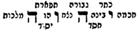

Pardes Rimmonim, English translation with the Hebrew.
We named it "The Four-Letter Name" because in it is explained the four-letter name, which the Kabbalists hold to be the name of the self (shem ha-etzem), whose sanctity is distinct from that of the other names. Its chapters number four.
19:1:1 The Nineteenth Gate: The Gate of the Four-Letter Name.
שער י"ט הוא שער שם בן ד':
19:1:2 What is intended in this Gate is to explain something of the explanation of the four-letter name, so that its holiness, and its being distinct from the other holy names, may be explained, as we shall explain:
הנרצה בשער הזה הוא לבאר קצת מפירוש שם בן ד', להיות קדושתו מתבארת והיותו נבדל משאר השמות הקדושים כאשר נבאר:
19:1:3 Chapter One:
פרק ראשון:
19:1:4 After our Maker has helped us, and we have included in the preceding gates all that the inquirer needs in the matter of the inquiries concerning the manifestation of the Emanation, we now come in this gate to explain the name that relates to the totality of the entire Emanation, according to the explanation found in the words of Rashbi. And let the inquirer not expect of us that we include here, in this gate, all the explanations found concerning the Name in the words of Rashbi, for this is impossible; and further, the matter would weigh very heavily upon us, and the reading would not be easy for the inquirer. But we will write in it here as much as is needed to enter through it into the gates of the Zohar, so that study may be easy for the discerning; and behold, we enter into its explanation. All the expounders of inscriptions [dorshei reshumot] of our holy Torah, whether of the masters of the Kabbalah, or of the masters of the plain sense, or of the investigators of the roots of our Torah, all agreed with one mouth that this name is the name of the self [shem ha-etzem; also "proper name"] and no other. And they singled it out among the other holy names that may not be erased, to the point that they said that even the name Ehyeh, although it is a very awesome name, is not equal to this name. And concerning this name there are many reasons, and the most compelling of all of them is this: that from all the names that may not be erased some verb is derived, except the four-letter name, whose letters do not entail any verb at all by any reckoning. And this is because the names Elohim, Eloah, El are derived from the language of greatness, might and strength; as in (Ezek. 17:13) "and he took the mighty [eilei] of the land," and in (Ps. 36:7) "Your righteousness is like the mountains of God [El]," which are language of greatness and might. And the name Shaddai indicates that He overpowers [shoded] the arrays [of the heavens]. And the name Tzeva'ot indicates His being master of the hosts on high, and it is derived from the language of "the host [tzeva] of heaven." And the name Adonai indicates lordship, His being Lord of all the earth, and it is derived from the language of lordship. And Ehyeh indicates the matter of being, in the future tense, first person, in the simple conjugation; and so our Rabbis, of blessed memory, expounded (Berakhot 9b): "I was with them in the exile of Egypt; I will be with them in other exiles," etc. But the four-letter name, very awesome: who can contain an explanation of it? For it has no explanation at all. The second reason: all these names we may use in profane speech if we wish, which is not so with the letters of the four-letter name. How so? El: Scripture uses it in profane speech, "another god [el]" (Ex. 34:14), and likewise "like the mountains of God," and many like it. And likewise Elohim, as "See, I have made you a god [elohim] to Pharaoh" (Ex. 7:1), and likewise "You shall not revile the judges [elohim]" (Ex. 22:27), and much like it. And Shaddai, as "and the creatures of the field [sadai] are with me" (Ps. 50:11), "he shall lodge between my breasts [shadai]" (Song 1:13): behold its letters, and they are only profane. And the name Tzeva'ot, as "all the hosts of the Lord went out" (Ex. 12:41), and the like. Adonai, as (Gen. 18:3) "And he said, My lords [adonai], if now I have found favor in your sight, do not pass away," etc.; and some of our Rabbis say that he said it to the greatest of them; and although there are those who disagree on this and say that it is holy, nevertheless the practical upshot according to all of them is that if one wishes to say to his master "Adoni," that is to say, "my lord," it is permitted to use it in profane speech. Ehyeh, as "for why should I be [ehyeh] as one who is veiled" (Song 1:7), "I will not be [ehyeh] a healer" (Isa. 3:7), and much like them. Which is not so with these four holy letters, YHVH: for although three of them are found, all four are not found in another, profane matter; as it is written (Eccl. 11:3), "In the place where the tree falls, there it shall be [yehu]"; but the four-letter name as a whole is not found. And this reason is somewhat close to the first reason. Further, the third reason: all the names are pronounced as they are written, except this holy name, for it was not pronounced by its letters except in the Temple, in the priestly blessing, and likewise by the high priest on the Day of Atonement. And the reason is that the other names are those that conduct the world, as is proven from their explanation; and the four-letter name has no explanation, and its action does not spread into this world except by being clothed in the other names, as we shall explain. And therefore it is permitted to mention the other names: for when the spirituality of those letters comes into being in the soul of the person [who mentions them, in the articulation of their letters], they are clothed in the air of this world to perform their action. But the four-letter name, because of its great holiness, is not clothed in the air of this world except in the Temple, in particular in the priestly blessing, as it is said (Ex. 20:21), "In every place where I cause My name to be mentioned I will come to you and bless you"; and the air is pure and clear, and it can be clothed, for it is clothed in the air of the Temple, that is, the Shekhinah, the name Adonai; and this is (Hab. 2:20), "But the Lord is in His holy palace." And let this preliminary not be light in the eyes of the inquirer, for it is of precious worth. And with it the reason will be explained why it is forbidden to speak words of Torah in a filthy place, in a bathhouse, and in a privy: for it is a place of the air of the husk and of filth; and words of Torah are the spirituality of holiness, and if one mentions them in a place of filthy air, it turns out that he combines pure with impure, and holiness is clothed in the air of the husk. And nevertheless, to keep someone away from a prohibition it is permitted; for then the words of Torah serve to tip the balance against the husk, to fulfill (Ps. 103:19), "and His kingship rules over all," as we explained in the Gate of ABYA, chapter 7.
אחרי שעזרנו קוננו וכללנו בשערים הקודמים כל הצורך אל המעיין בענין הדרושים במציאות האצילות. נבא עתה בשער הזה לבאר השם המתייחס אל כללות האצילות כלו בפי' הנמצא בדברי הרשב"י. ואל יקוה ממנו המעיין שנכלול הנה בשער זה כל מציאות הפירושים הנמצאים בענין השם בדברי הרשב"י כי זה בלתי אפשר. ועוד יכבד הענין אלינו מאד והמעיין לא יקל עליו קריאתו. אבל נכתוב בו הנה די הצורך לבא בו אל שערי הזהר. כדי שיקל עיונו אל המשכיל והננו נכנסים בביאורו. כל דורשי רשומות מתורתינו הקדושה אם מבעלי הקבלה ואם מבעלי הפשט אם מחוקרי שרשי תורתינו כלם הסכימו פה אחד היות שם זה שם העצם ולא זולתו. ויחדוהו בין שאר השמות הקדושים שאינם נמחקין. עד שאמרו כי אפי' שם אהיה עם היותו שם נורא מאד לא ישתוה אל השם הזה. ובהשם הזה יש סבות רבות. והיותר מכרחת שבכלם הוא. להיות שכל השמות שאינם נמחקים יגזור מהם פעל קצת, זולתו שם בן ד' שאין אותיותיו מחייבות בשום הגיון פעל כלל. וזה כי שם אלדי"ם אלו"ה א"ל הוא נגזר מלשון גדולה וחוזק ותוקף, וכן (יחזקאל יז יט) ואת אילי הארץ לקח, וכן (תהלים לו ז) צדקתך כהררי אל, שהם לשון גדולה וחוזק. ושם שד"י מורה על שהוא שודד המערכות. ושם צבאו"ת מורה על היותו בעל צבאות מעלה, והוא נגזר מלשון צב"א השמים. ושם אדנ"י מורה לשון אדנות על היותו אדון כל הארץ, והוא נגזר מלשון אדנות. ואהיה מורה על ענין הויה בלשון עתיד המדבר בעדו מבנין הקל, וכן דרז"ל (ברכות ד"ט) אני הייתי עמהם בגלות מצרים אהיה עמהם בגליות אחרות וכו'. אמנם שם בן ד' נורא מאד מי יכילנו ביאור כי אין לו ביאור כלל. סבה השניה כי כל השמות האלה נשמש בהם לשון חול אם נרצה, משא"כ באותיות שם בן ד'. כיצד. אל, נשתמש בו הכתוב בלשון חול אל אחר, וכן כהררי אל וכיוצא בו רבים. וכן אלדים, כמו ראה נתתיך אלהים לפרעה, וכן אלדים לא תקלל וכיוצא בו הרבה. ושדי, כמו וזיז שדי עמדי, בין שדי ילין, הרי אותיוו ואינם אלא חול. ושם צבאות, כמו יצאו כל צבאות ה' וכיוצא בו. אדנ"י, כמו (בראשית יח ג) ויאמר אדני אל נא תעבור מעל וכו' ויש מרבותינו אומרים לגדול שבהם אמר, ועם היות שיש חולקים בזה ואומרים שהוא קדש עכ"ז נ"מ דאליבא דכלהו אם ירצה לדבר לאדונו אדני ר"ל אדון שלי מותר להשתמש בו בלשון חול. אהי"ה, כמו שלמה אהיה כעוטיה, לא אהיה חובש וכיוצא בהם הרבה. משא"כ בד' אותיות קדושות האלה ידו"ד. כי עם היות ששלשה מהם ימצא. ארבעתם לא ימצאו בענין אחר חול. כמה דכתיב (קהלת יא ג) במקום שיפול העץ שם יה"ו. אבל שם בן ד' כלו לא נמצא. וסבה זו קרובה אל סבה הראשונה בקצת. עוד סבה הג' כי כל השמות נהגין ככתבן. זולת השם הקדוש הזה כי לא היה נהגה באותיותיו זולתי במקדש בברכת כהנים, וכן כ"ג ביה"כ. והטעם הוא כי שאר השמות הם המנהיגים העולם כדמוכח מתוך ביאורם, ושם בן ד' אין לו ביאור ופעולה אליו מתפשטת בעולם הזה זולתי בהתלבשו בשאר השמות כמו שנבאר. ולכן שאר השמות מותר להזכירם כי כאשר אותם האותיות יתהוה רוחניותם בנשמת האדם [המזכירם בחיתוך אותיותיהם] ויתלבשו באויר העולם הזה לפעול פעולתם [מה], אבל שם בן ד' מרוב קדושתו אינו מתלבש באויר העוה"ז זולתי בבית המקדש בפרט בברכת כהנים שנאמר (שמות כ כא) בכל המקום אשר אזכיר את שמי אבוא אליך וברכתיך והאויר טהור וזך ויכול להתלבש כי הוא מתלבש באויר בית המקדש דהיינו השכינה שם אדנ"י. והיינו (חבקוק ב) וה' בהיכל קדשו. ואל יקל בעיני המעיין הקדמה זו כי היא יקרת הערך. ועמה יתבאר הטעם למה אסור לדבר בתורה במקום המטונף ובמרחץ ובבית הכסא, כי הוא מקום אויר הקליפה והטנופת. ודברי תורה הם רוחניות הקדושה ואם יזכירם במקום אויר מטונף נמצא מרכיב טהור בטמא, וקדושה מתלבשת באויר הקליפה. ועכ"ז לאפרושי מאסורא מותר, כי אז הדברי תורה הם להכריע הקליפה לקיים (תהלים קג יט) ומלכותו בכל משלה כדפי' בשער אבי"ע פ"ז.
19:1:5 And behold, they gave the four-letter name the title "the explicit name" [shem ha-meforash], and several explanations of this are possible: either from the language of explanation [perush], or from the language of setting apart and separation. From the language of explanation, it would mean that it was pronounced explicitly and uttered by its letters on the Day of Atonement, or in the priestly blessing in the Temple; or it would mean explicit, known. And from the language of setting apart, it would mean set apart from the thoughts of understanding, or set apart from mention and utterance. All this can properly be said of it. And let it not enter the mind of the inquirer to say that by our saying "the name of the self" we mean the Self of the Emanator, the Ein Sof, God forbid; for this is an improper thing, as we explained at length in Gate 3, chapter 1. Rather the intent in our saying "the name of the self" is that it is the self of the sefirot; explanation: the name that comprises the whole Self of the sefirot. And it is known that the matter of the Emanation as a whole is the name of the Ein Sof; explanation: it indicates His Self. The parable for this: as the name Isaac is a handle for that man, by which speech can take hold [of him]; and if we did not attach a name to him, we could not speak of him, for we would not know him. So the Ein Sof, through the Emanation, will have a handle and a name indicating His Self, so that we can speak of Him. And therefore the four-letter name is a name comprising all the Emanation, in general and in particular, etc.; and therefore we attribute it [the name of the self] to Him, and His name, explanation: the Emanation. And the four-letter name, or the other names, are not to Him, may He be exalted, as proper names [shemot ha-etzem] are to people. For their names are conventional, and not such that the name indicates the character of the man at all, nor such that his name indicates his self. Not so His names, may He be blessed, for all of them indicate the character of the thing called by them. And therefore we said that the name of the self does not indicate the Self of the Emanator, for there is nothing that can bound His Self and His unity and His manifestation, God forbid. And because this is true, the sages of Israel and their prophets agreed to title Him with names indicating the concealment of His holiness from the thoughts of the heart. And this is His name by which they call Him in the heights of heaven, all the hosts on high, array facing array: "Where [ayeh] is the place of His glory, to revere Him?" For they do not know a place for Him, nor understand an understanding of Him. But those that reveal to us His divinity and something of His exaltedness are His emanated ones. And according to the truth, it can accordingly properly be said that the Emanation is His name, which indicates something of His hiddenness and His concealment; and the name of the self, which is the four-letter name, is what indicates the Self of His emanated ones, in general and in particular, as was revealed, in the will of His compassion to grant us merit, [in His Torah given] to Moses our teacher, peace be upon him. And as for the manifestation that comprises all the emanated ones, the explanations of it are many, as we shall explain in a chapter of its own, with the help of Heaven:
והנה כינו שם בן ד' בלשון שם המפורש וזה אפשר בו פי' שונים. אם לשון פירוש, או מלשון הפרשה והבדלה. מלשון פי' ירצה כי הוא היה מתפרש ונהגה באותיותיו ביה"כ או בברכת כהנים במקדש, או ירצה מפורש ידוע. ומלשון הפרשה ירצה מופרש מרעיוני ההבנה, או מופרש מההזכרה וההגיון. כל זה יוצדק בו. ואל יעלה בדעת המעיין לומר כי מה שאנו אומרים שם העצם ר"ל עצמות המאציל א"ס חלילה, כי זה דבר בלתי הגון כמו שבארנו והארכנו בשער ג' פ"א. אלא הכוונה באמרנו שם העצם, שהוא עצם הספירות פי' שם הכולל כל עצמות הספירות. ונודע שענין האצילות כולו הוא שמו של הא"ס פי' מורה על עצמותו. המשל בזה כמו ששם יצחק הוא בית יד אל האיש ההוא שבו תהיה תפיסת הדיבור, ואם לא נייחסהו בשם לא נוכל לדבר בו כי לא נדעהו. כן הא"ס ע"י האצילות יהיה בית יד ושם המורה על עצמותו כדי שנוכל לדבר בו. ולכן שם בן ד' הוא שם כולל כל האצילות בכללם ופרטם כו' ולכן נייחס אותו [שם העצם אליו] ושמו פי' האצילות. ואין שם בן ד' או שאר השמות אליו ית' כשמות העצם אל האנשים. כי שמם הסכמיים אבל לא שיורה השם על תכונת האיש כלל, ולא שיורה שמו על עצמותו. ואין כן שמותיו יתברך כי כלם מורים על תכונת הדבר הנקרא בו. ולפיכך אמרנו כי אין שם העצם מורה על עצמות המאציל כי אין דבר שיגביל עצמותו ואחדותו ומציאותו חלילה. ולהיות זה אמת הסכימו חכמי ישראל ונביאיהם לכנותו בשמות מורים על ההעלם קדושתו מרעיוני הלבבות. וזה שמו אשר יקראו לו בשמי מרום כל צבאי מעלה מערכה מול מערכה אי"ה מקום כבודו להעריצו כי לא ידעו לו מקום ולא יבינו לו תבונה. אמנם המגלה לנו אלהותו וקצת מרוממתו הם נאצליו. וע"ד האמת יצדק לפ"ז כי האצילות הוא שמו המורה קצת מהסתרו והעלמו ושם העצם שהוא שם בן ד' הוא המורה על עצמות נאצליו כללם ופרטם, כפי אשר נגלה ברצון רחמיו לזכותנו [בתורתו הנתונה] למרע"ה. ומציאות כוללת כל הנאצלים רבו בו הפירושים כמו שנבאר בפרק בפ"ע בע"ה:
19:2:1 Concerning the holiness of the four-letter name, its comprising the whole Emanation, the explanations are many. There are those who explained: "Yod is the image of the head of the Holy One, blessed be He. He is the right arm and the side of the body. Vav is the whole body, and thighs and legs and knees and the holy covenant. He is the left arm, and the Shekhinah of God. And this is its order: YHVH. And now it is to be explained, in each and every letter, how many sefirot go out from them in the vision of the eye; and this is their order, and all is one word:

And now we have to speak of where, from these images of these four holy letters, the tikkun of the body goes out," etc. Thus far its words, as relevant to our subject.
בענין קדושת שם בן ד' היותו כולל כל האצילות רבו בו הפירושים יש שפי' יו"ד איהו דיוקנא דרישא דקב"ה. ה' איהו דרועא ימינא וסטר גופא. ו' איהו כל גופא, ושוקין ורגלים וברכים וברית קדישא. ה' דרועא שמאלא ושכינת אל. והכי סדרוי יהו"ה. וכען אית לפרשא בכל את ואת כמה ספירן נפקין מנוי בחיזו עינא, והכין סדרוי, וכלא פתגם חד הוא
וכען אית לון למללא היכא נפיק מהני דיוקני דהני ד' אתוון קדישין נפיק תיקון גופא וכו' עכ"ל לעניינו.
19:2:2 And behold, he has another way with the four-letter name: that Yod comprises four sefirot, Keter, Chokhmah, Binah, Chesed; He, Gevurah; Vav, Tiferet, Netzach, Hod, Yesod; He, Malkhut. And he wished to explain that the Vav within the He is Metatron; and in our view it is not fitting to say this. And there are those who wish to say that in the Yod are two sefirot and the Ein Sof. This is the opinion of some commentators on the responsum of Rabbenu Hai Gaon that we wrote in the Gate of Tzachtzachot, chapters 1 and 2. And this is not the opinion of all the Kabbalists, for all of them agreed with one mouth that the four-letter name is in the sefirot, not above them, God forbid. And what most of them explained and agreed upon is that the Yod is in Chokhmah, and its upper thorn in Keter; the first He, Binah; Vav is the six extremities, as its name [six], which are Chesed, Gevurah, Tiferet, Netzach, Hod, Yesod; the last He, Malkhut. And close to this matter Rashbi explained in many places, and these are his words (in the Introduction to the Tikkunei Zohar, folio 5): "YHVH is: Yod, Chokhmah; He, Binah; Vav comprises six sides; He, Malkhut." Thus far his words.
והנה לו דרך אחר בשם בן ד'. כי י' כוללת ד' ספירות כתר חכמה בינה חסד, ה' גבורה, ו' ת"ת נצח הוד יסוד, ה' מלכות. ורצה לבאר כי הו' שבתוך הה' שהוא מטטרון, ובעיננו ראינו שאין ראוי לומר זה. ויש שרוצים לומר כי ביו"ד ב' ספירות ואין סוף. זהו דעת קצת מפרשים בתשובת רבינו האי גאון שכתבנו בשער הצחצחות פ"א ב', ולא כן דעת כל המקובלים כי כלם הסכימו פה אחד היות שם בן ד' בספירות לא למעלה מהם ח"ו. ומה שרובם פירשו והסכימו הוא כי הי' היא בחכמה, וקוצו העליון בכתר. ה' ראשונה בינה. ו' הוא ו' קצוות כשמה, שהם חסד גבורה ת"ת נצח הוד יסוד. ה' אחרונה מלכות. וקרוב לענין זה באר הרשב"י במקומות רבים וז"ל (בהקדמת ת"ז ד"ה) ידו"ד איהו, י' חכמה ה' בינה ו' כליל שית סטרין ה' מלכות עכ"ל.
19:2:3 And we have not found Rashbi saying that the thorn of the Yod hints at Keter; but elsewhere (Tikkun 5, folio 19b) there is some revealing, for he explained: "Yod: an upper thorn, a lower thorn, and its body in the middle; they are in the secret of letters, vowel points and cantillation marks." And the explanation: the letters are in Binah, and its lower thorn is in Binah; and the vowel points are in the middle body, in Chokhmah; and its upper thorn is in Keter, which are the cantillation marks. And likewise in parashat Acharei (folio 65b), and these are its words: "The upper thorn of the Yod hints at Nothing [Ayin]." Thus far its words. (And likewise in parashat Vayikra, folio 10b, that the upper thorn hints at the Supernal Keter; see there.) And Nothing is Keter, as is known. But we should be precise in his language, in saying "the upper thorn," etc.: explanation: the upper thorn is a hint of Keter in its lower aspect, which is the aspect that unites with Chokhmah and Binah; for this is the explanation of Ayin: Alef, Keter; Yod, Chokhmah; Nun, Binah, as we shall explain in the Glossary of Titles. And the reason is that in the aspect of itself above, in relation to its aspect that unites with its simple root, it has no name and no point, as we explained in the Gate From Below to Above, chapter 5; and the thorn of the Yod there is in its aspect that unites with Chokhmah and Binah, as we explained. And this is what is found in the Zohar in the explication of the Name, without specifying it (in its fillings) in all the sefirot. And for this reason they called it "the unique name," for it is the name in which all ten sefirot are united, unified as one. This is one way of the four-letter name in the sefirot. Further, Rashbi wrote in the Tikkunim (in the Introduction, folio 3a) another way in this: Yod, Keter; Yod-He, Chokhmah and Binah; Yod-He-Vav, Chesed, Gevurah, Tiferet; Yod-He-Vav-He, Netzach, Hod, Yesod, Malkhut. And these are his words: "'And I heard the sound of their wings' (Ezek. 1:24): with ten kinds of praises: with a simple song, which is Yod, Keter; a double song, which is Yod-He, Chokhmah and Binah; a triple, Yod-He-Vav, which is Chesed, Gevurah, Tiferet; a quadruple, with YHVH, which is Netzach, Hod, Yesod, Malkhut." Thus far. And the relation of these letters to the sefirot is as we explained in Gate 8: that the sefirot are divided into these three lines: first, the line of Chesed; second, the line of judgment; third, the middle one, the line of Rachamim. And to these three lines belong three letters, which are Yod-He-Vav: Yod, the root of the line of Chesed; Vav, the root of the line of Rachamim; He, the root of the line of judgment.
ולא מצינו להרשב"י שיאמר שקוצו של יו"ד רמוז בכתר, אבל במ"א (תקונא ה' דף י"ט ע"ב) יש גילוי קצת שפירש יו"ד קוצא דלעילא קוצא דלתתא וגיו באמצעיתא אינון ברזא דאתוון נקודי וטעמי. ופי', כי האותיות הם בבינה וקוצו התחתון בבינה, ונקודין בגיו האמצעי בחכמה, וקוצו העליון בכתר שהם הטעמים. וכן בפ' אחרי (דס"ה ע"ב) וז"ל קוצא דיו"ד לעילא רמיזא לאי"ן עכ"ל (וכן בפ' ויקרא ד"י ע"ב דקוצא דלעילא מרמז לכתרא עילאה ע"ש) ואי"ן הוא הכתר כנודע. אבל ראוי שנדקדק לשונו דאמר קוצא דלעיל' וכו' פי' הקוץ העליון הרמז לכתר בבחינתו התחתונה שהיא הבחי' המתיחד עם החכמה והבינה, שזהו פי' אי"ן א' כתר י' חכמה ן' בינה כמו שנבאר בערכי הכנויים. והטעם מפני שבבחינת עצמו למעלה בערך בחינתו המתייחד בשרשו הפשוט אין לו שם ונקודה כדפי' בשער ממטה למעלה פ"ה, ושם קוצו של יו"ד הוא בבחינתו המתייחד עם החכמה והבינה כדפי'. וזהו הנמצא בזוהר בפרישת השם בלי שיפרטהו (במילואיו) בכל הספירות. ולטעם זה קראוהו שם המיוחד שהוא שם המתייחדים בו כל הי"ס מיוחדים כאחד. זהו דרך א' בשם בן ד' בספירות. עוד כתב הרשב"י בתיקונים (בהקדמה ד"ג.) דרך אחרת בזה. י' כתר, י"ה חכמה ובינה, יה"ו חסד גבורה תפארת, יהו"ה נצח הוד יסוד מלכות. וז"ל ואשמע את קול כנפיהם, בעשר מיני תהלים. בשיר פשוט דאיהו י' כתר, שיר כפול דאיהו י"ה חכמה ובינה, משולש יה"ו דאיהו חסד גבורה תפארת, מרובע ביהו"ה דאיהו נצח הוד יסוד מלכות ע"כ. והיחס אל האותיות האלה בספירות הוא כמו שבארנו בשער ח' שהספירות הם מתחלקות לאלו הג' קוים. א' קו החסד, ב' קו הדין, ג' אמצעי קו הרחמים. ולג' קוים אלו ג' אותיות שהם יה"ו. י' שרש לקו החסד ו' שרש לקו הרחמים ה' שרש לקו הדין.
19:2:4 And behold, Keter, although Vav can also properly be said of it, as explained at the end of the Gate of Manifestations, nevertheless the Vav is in a borrowed sense, because the root of compassion is from Da'at, as explained in Gate 8, chapter 25. And the Yod is hinted at in it because of its smallness and its subtlety and its concealment, to indicate the concealment of Keter and the little apprehension of it, just as the thorn of the Yod, that is, a small Yod, is related to it. Afterwards there is Yod in Chokhmah, which is the root of Chesed; He in Binah, which is the root of judgment. Afterwards there is Yod in Chesed, because it is a branch of Chokhmah; and further, because at times Chokhmah dwells upon it, as is known, in the secret of "whoever wishes to become wise should turn southward" (Bava Batra 25b). And He in Gevurah, for the same reason as the Yod in Chesed. And the Vav in Tiferet. Afterwards Yod in Netzach, for the reason that it is in Chesed; He in Hod, for the reason that it is in Gevurah; and Vav in Yesod, as is known, for it is the extension of the Vav, and likewise the small Vav, for the reason that it is in Tiferet; He in Malkhut, for there is its principal place, for it is the last He of the Name. And this is the relation of the ten letters, Yod, Yod-He, Yod-He-Vav, Yod-He-Vav-He, to the ten sefirot. Further, Rashbi explained that the four-letter name in its filling with Alefs is, in Chokhmah, ten sefirot, which are יו"ד ה"א וא"ו ה"א. And Rashbi, peace be upon him, explained in the Tikkunim that it comprises the Name in ten sefirot, a revealed comprehensiveness; from this, that it is the totality of the existents, revealed in four arrays, as we shall explain in chapter 3. But from the side of Binah they are included only in the four letters YHVH alone. And the reason: when the light of Chokhmah prevails and shines in the sefirot, then כ"ח מ"ה [the power of Mah] shines, which amounts to Adam [45]; and this name, which amounts to Adam, indicates that the light is a bright and clear light, sparkling in ten sparks. But when the light is from Binah alone, the sefirot are revealed only in general, not in particular. How so? Yod-He in Binah (which is the totality of the first three); and so Tiferet is called "son of Yah" [ben Yah], that is, Binah, the letters of the one being the letters of the other; Vav comprises six sefirot; He in Malkhut. It turns out that the sefirot are not revealed by themselves; rather the light of the sefirot is included within the totality of Binah, Tiferet and Malkhut; and this is YHVH in general. But יו"ד ה"א וא"ו ה"א is from the side of the light of Chokhmah, and it reveals all ten sefirot together, without any generality; rather all of them are seen. And all this Rashbi explained in the Tikkunim; and so as not to lengthen by copying his language, which is scattered and dispersed, we will not lengthen. Further, Rashbi explained the four-letter name in the filling of Yods, יו"ד ה"י וא"ו ה"י, and it indicates more concealment than its filling with Alefs, as we shall explain in chapter 3. And the reason is that this is the light revealed from Keter, and it shows all the sefirot, but not with an essential revealing, as we shall explain. And although they are closed and concealed, they did not come included [in general letters], so as not to show poverty in the place of wealth. And this name is certainly in Keter, and not in the aspect of itself but in its aspect with Chokhmah and Binah; and therefore in this name there are three Yods, which are a segolta in Keter, the first three: that is, in the aspect of Chokhmah within it, the right Yod; and in the aspect of Binah within it, the left Yod; and the aspect above them, that is, the first Yod. And the Alef in the middle of וא"ו is the skull [karkafta] that covers the three brains, like this: י. And this is the secret of the name El, as they transcribe it thus; and Rashbi has already explained that it amounts to the number of El; for in Keter too there is the name El, which is supernal Chesed. Thus far reaches what we saw fit to say about the four-letter name comprising ten sefirot. But as for the four-letter name itself, in the explanation of its four letters, we shall explain in the Gate of Names:
והנה הכתר עם היות שג"כ יצדק בו ו' כמבואר בשלהי שער המציאיות, עכ"ז הוא"ו הוא בהשאלה, לפי ששורש הרחמים הוא מהדעת, כמבואר בשער ח' פכ"ה. והי' נרמזת בו מפני קטנותה ודקותה והעלמה להורות על העלם הכתר ומעט ההשגה בו כמו שמתייחס אליו קוצו של יו"ד היינו יו"ד קטנה. אח"כ הוא יו"ד בחכמה שהוא שורש החסד. ה' בבינה שהוא שורש הדין. אח"כ הוא יו"ד בחסד מפני שהיא ענף מהחכמה, ועוד שלעיתים החכמה שוכנת עליו כנודע בסוד הרוצה להחכים ידרים. וה' בגבורה מהטעם שהיו"ד בחסד. והוא"ו בתפארת. אח"כ י' בנצח מן הטעם שהיא בחסד. ה' בהוד מן הטעם שהיא בגבורה. וא"ו ביסוד כנודע שהוא משך הוא"ו וכן ו' זעירא מן הטעם שהוא בת"ת. ה' במלכות כי שם עיקרה שהיא ה' האחרונה של שם וזהו יחס בי' אותיותיו י' י"ה יה"ו יהו"ה אל הי"ס. עוד פי' הרשב"י כי שם בן ד' במלוי אלפין בחכמה הם י"ס שהם יו"ד ה"א וא"ו ה"א. ופי' הרשב"י ע"ה בתקונים שכולל השם בי"ס כללות נגלה מזה שהוא כלל הנמצאות נגלה בד' מערכות כמו שנבאר בפ"ג. אבל מצד הבינה אינם נכללות אלא בד' אותיות יהו"ה לבד. והטעם כי כאשר יגביר ויאיר אור החכמה בספי' הנה יאיר כ"ח מ"ה שעולה אדם ושם זה העולה אד"ם הורה היות האור אור בהיר וזך ומתנוצץ בי' נצוצות. אבל כשהאור מבינה לבד אין הספי' מתגלות אלא בכללות לא בפרט. כיצד י"ה בבינה (שהיא כלל הג' ראשונות) וכן נקרא הת"ת בן י"ה בינה אותיות דדין כאותיות דדין. ו' כולל שש ספירות. ה' במלכות. נמצאו שאין הספירות מתגלות מעצמן אלא אור הספי' נכללות בכלל הבינה והתפארת והמלכות וזה יהו"ה בכללות אבל יו"ד ה"א וא"ו ה"א הוא מצד אור החכמה ומגלה כל י"ס יחד בלא כללות כלל אלא הם מתראות כלם. וכ"ז ביאר הרשב"י בתקונים ושלא להאריך בהעתק לשונו שהוא מפוזר ומפורד לא נאריך. עוד ביאר הרשב"י בשם בן ד' במלוי יודי"ן יו"ד ה"י וא"ו ה"י, והוא מורה העלם יותר ממלואו באלפין כמו שנבאר בפ"ג. והטעם כי זהו אור המתגלה מכתר והוא מראה הספי' כלם אך לא גילוי עצמי כאשר נבאר. ועם היותם סתומות ונעלמות לא באו נכללות שלא להראות עניות במקום עשירות. והשם הזה ודאי בכתר ולא בבחינת עצמו אלא בבחינתו עם החכמה והבינה, ולכן בשם זה ג' יודין שהם סגולתא בכתר ג' ראשונות. והיינו בבחינת החכמה שבו יו"ד ימינית, ובבחינת הבינה שבו י' שמאלית, ובחינה למעלה מהם היינו היו"ד הראשונה. ואלף שבאמצע וא"ו היא קרקפתא המכסה על ג' מוחות כזה י. וזהו סוד שם א"ל המעתיקים אותו כך, וכבר פי' הרשב"י שעולה כמנין א"ל. שבכתר ג"כ אית שם א"ל שהוא חסד עליון. ע"כ הגיע מה שראינו לדבר בשם בן ד' הכולל י"ס. ואולם בשם בן ד' עצמו בביאור ד' אותיותיו נבאר בשער השמות:
19:3:1 Concerning the four-letter name in its filling, which we explained in the preceding chapter, Rashbi gave an explanation in parashat Emor (folio 92); and we will not copy his language, lest the labor weigh upon us, but we will write their essence, with additions, [in] a place that he left for us to distinguish ourselves in. And the matter is that, besides the four-letter name indicating the whole totality of the entire Emanation, as we explained, it further indicates [it] in four letters, each and every letter of them indicating the totality of the whole Name, that is to say, also comprising the whole Emanation. And this is that the Yod in its filling is יו"ד, Yod-Vav-Dalet: the Yod is in Chokhmah, and the Vav in Tiferet, and the Dalet in Malkhut; behold, the totality of the whole Emanation from beginning to end. For in the Yod the first three are included, as we explained in chapter 2, and the Vav in Tiferet comprises six extremities, and the Dalet in Malkhut: these are ten sefirot included in the Yod in its filling. And to indicate the matter of the true union, the Yod in its filling is the form of Alef. How so? The Yod above the diagonal line, and the diagonal line is Vav, and the lower Yod in the form of Dalet: behold, Yod in its filling and Alef are all one. And now there is no wonder about the name Ehyeh, that its beginning is Alef while the head of the four-letter name is Yod; for Yod and Alef are all one, as we shall explain in the Gate of Names, on the name Ehyeh, with the help of Heaven. And the Hes too are all one, and in them the Emanation is included, like the manifestation of the Yod itself. How so? The middle thorn between the two sides of the Dalet, that is, the thorn of the Dalet, is Yod (and so Rashbi explained in the Zohar, in a passage that we shall copy in the Gate of Names, chapter 11; see there); and the Dalet itself, behold Dalet; and the Vav within the Dalet: behold יו"ד. And in this way for the last He. And sometimes the particularity of the He is revealed essentially in its filling, which is the filling of Alef, like this: ה"א, indicating the revealing of the totality essentially. And the Vav too is filled with Alef: behold the totality of the Emanation. It turns out that the four letters reveal four arrays, four totalities, so that the part is in the whole and the whole in the part, for the multiplication of [the indication of] the unity. And the reason for these four totalities, which in their particulars are Yod Chokhmah, He Binah, Vav Tiferet, He Malkhut, is to hint at the four arrays in which we arrange the Emanation, as we explained in the Gate of the Order of the Emanation, chapter 5, with the help of Heaven. And there we explained that the Emanation is four arrays: the first array Chokhmah, the second array Binah, the third array Tiferet, the fourth array Malkhut. And therefore these four letters are inscribed and marked in these four arrays in particular, and their principal is in the whole Emanation; and their concealment, which is their filling, indicates the totality of the Emanation concealed within them. And what we should further know is that these letters are not equal in their arrays: for the Alef indicates the concealed Emanation with a more revealed revealing than the Yod; for the Yod indicates it in its filling, and this indicates it in its simple form, for the Yod in its filling is a simple Alef, as we explained. And because Chokhmah is more concealed than the other arrays, the revealing of the array that is in it came in great concealment, that is, the concealment of the filling of the Yod. But the He indicates the principal of the array itself, in the revealing of its very self, as we explained: for a simple He, without any filling, indicates the array within it; and when it is filled, the array is revealed more, to crown the delightful son, who is Vav.
בשם בן ד' במלואו שפי' בפ' הקודם ביאר הרשב"י פ' אמור (דף צ"ב) ולא נעתיק לשונו לבל תכבד עלינו העבודה אבל נכתוב מהותם בתוספות מקום שהניח לנו להתגדר בו. והענין כי בזולת ששם בן ד' מורה כל כללות האצילות כלו כדפי'. עוד מורה בד' אותיות, כל אות ואות מהם מורה על כללות השם כלו ר"ל כולל ג"כ כל האצילות. והיינו שיו"ד במלואה הוא יו"ד וא"ו דל"ת. היו"ד הוא בחכמה והוא"ו בת"ת והד' במלכות הנה כללות האצילות כלו מראש ועד סוף. כי ביו"ד נכללות ג' ראשונות כמו שפי' בפ"ב, והוא"ו בת"ת כולל שש קצוות, והד' במלכות הם עשר ספירות נכללות ביו"ד במלואה. ולהורות ענין היחוד האמיתי יו"ד במלואה הוא צורת א. כיצד היו"ד שלמעלה מהקו האלכסוני, והקו האלכסוני הוא ו', והיו"ד התחתונה בצורת ד'. הרי י' במלואה ואלף הכל א'. ועתה אין תימה בשם אהי"ה כי תחלתו א' ושם בן ד' ראשו יו"ד, כי יו"ד ואלף הכל אחד, כמו שנבאר בשער השמות בשם אהי"ה בע"ה. וההי"ן ג"כ הכל אחד, ובהם נכלל האצילות כמציאות היו"ד בעצמה. כיצד העוקץ האמצעי שבין שני צדי הד' דהיינו קוצו של ד' היא י', וכן פי' הרשב"י בזהר במאמר שנעתיקהו בשער השמות פי"א יעויין שם. והד' עצמה הרי ד'. והו' שבתוך הד' הרי יו"ד. ובדרך זה לה' אחרונה. ולפעמים מתגלה פרטיות הה"א בעצם במלואה שהיא במלוי אלף, כזה ה"א. מורה על גילוי הכללות בעצם. והוא"ו הוא ג"כ מתמלא באל"ף הרי כללות האצילות. נמצאו הד' אותיות מגלים ד' מערכות ד' כלליות. להיות החלק בכל והכל בחלק לרבוי [הוראת] האחדות. וטעם ד' כללים אלו שהם בפרטיותיהם י' חכמה ה' בינה ו' תפארת ה' מלכות, לרמוז אל ד' מערכות שנעריך האצילות כדפי' בשער סדר האצילות פ"ה בס"ד. ושם ביארנו שהאצי' ד' מערכות, מערכה ראשונה חכמה מערכה שניה בינה מערכת שלישית תפארת מערכה רביעית מלכות. ולכן ד' אותיות אלו נרשמות ומסומנות בד' מערכות אלו בפרט. ועיקרן בכל האצי'. והעלמם שהוא מילואם מורה על כללות האצילות הנעלם בתוכם. ומה שנדע עוד הוא שהאותיות האלה במערכותם אינו שוה כי האלף מורה על האצי' הנעלם גילוי יותר מתגלה מהיו"ד כי היו"ד מורה עליו במלואו וזה מורה עליו בפשיטתו כי יו"ד במלואה הוא א' פשוטה כדפי'. ולהיות כי החכמה נעלמה יותר משאר המערכות בא גילוי המערכת שבה בהעלם גדול דהיינו העלם מלוי היו"ד. אמנם ה' מורה עיקר המערכת בעצמה בגילוי עצמותה כדפי'. כי ה' פשוטה בלי מלוי כלל מורה על המערכת שבה ובהיותה מתמלאת מתגלה המערכת יותר להעטיר הבן הנחמד שהוא וא"ו.
19:3:2 Further, He and Vav are filled in two ways, either with Alef or with Yod. For when the array in Binah is revealed with an essential revealing, with Alef, then Tiferet, the delightful son, reveals the array in the manifestation of Alef, according to its drawing sustenance from its mother. But when the He is filled with Yod, like this, ה"י, then it indicates concealment, as we explained that Yod is more concealed than Alef; and then the Vav is filled with Yod, like this, וי"ו, indicating the concealment of the array, which was not revealed to it more than to the mother. And according to the filling of the Vav that is in Tiferet, so is the He that is in Malkhut filled, because she receives from it alone. And sometimes, although the filling of the Vav is with Alef, the filling of the He with Yod indicates that it was revealed and concealed; for such is the way of Malkhut, which is a parokhet, a screen, concealing and hiding the whole Emanation. And with this preliminary it will be understood that sometimes the He is filled with He, like this: ה"ה. And according to what we have explained, it turns out that the revealing of the arrays came in three kinds, either with Yod, or with Alef, or with He, and each one more concealed than its fellow. Yod is the most concealed of all, for the totality of the Emanation is not revealed in it except by way of filling. And when the Vav is filled with Yod, then the matter turns out to be concealed within concealed; for the simple Yod is concealed in וי"ו, and the Yod itself needs filling. And the reason is that the array revealed in the filling of the Yod is the array of the Emanation concealed in Chokhmah, and it is concealed with the utmost concealment. And when it is revealed in Binah, which is He, or in Tiferet, which is Vav, or in Malkhut, which is the last He, it is not revealed essentially except with great difficulty, according to the depth of the grades, by the power of the effluence of the light of Keter, as befits the subtlety that is in Chokhmah. And because Chokhmah is concealed, it is not fitting that the array be revealed except in the very concealment, that is to say, in the form of Yod, and not in the other letters. And therefore Yod has no filling but Yod, and is filled neither with Alef nor with He, unless it is a complete word, that is, Yah, where the He is a name and a palace to the Yod within it, and like a title to it and to the name within the sefirah, as will be explained in the next gate, with the help of Heaven. But the He is filled with Alef and with Yod, and in the opinion of some also with another He; and likewise the last He, and likewise the Vav. But the array is revealed in the very body of the Hes without (revealing) [filling], as we explained. And they are excluded from the rule of the other letters: for Yod and Vav have in themselves no revealing of an array at all, except in their filling; which is not so with the Hes, for the Hes themselves are revealed in the form of the arrays, as we explained; for in the form of ה"א itself there is the form of יו"ד, that is, the form of Alef. And the reason is that Yod and Vav, which are Chokhmah and Tiferet, are males, for so they are called Father and Son; and Binah and Malkhut are females, for so they are called Mother and Daughter. And it is known that the generations and the beings are in the male in great concealment, for the children depend on the brain of the male; as is known from the parable of the seed, concealed in the male and revealed in the full womb through the union of the male and the female; and she reveals the actions essentially. And therefore in Chokhmah and Tiferet the beings, that is, the arrays comprising the Emanation, are concealed, and they are not revealed in them except in great concealment, through the fillings; that is, after the actions go out from them, and they go out from them like the filling of a letter, which goes out from the letter and is outside the letter, as is known. But the females, which are the Hes, show the actions in pregnancy within them, that is, the manifestation of the form of the He itself, and show more when they go out from before them, that is, the fillings. And one should not ask: but Binah is more concealed than Tiferet; if so, why did the revealing of the array come in Binah more than in Tiferet? This is no question: for Binah in relation to Chokhmah is female, and Tiferet in relation to Malkhut is male, and therefore each one is judged according to its relation. And now that the matter of the difference between Alef and Yod has been explained, that Alef reveals more than Yod, and Alef is female in relation to Yod, the reason for the four-letter name filled with Yods in Keter and filled with Alefs in Chokhmah will not be far from us: for this one reveals more than that. Thus far reaches the filling of the letters of the four-letter name, as far as is apprehended by us from the words of Rashbi in parashat Emor mentioned above:
ועוד ה"א וא"ו מתמלאים על שני פנים אם באלף אם ביו"ד. מטעם כי כאשר יתגלה המערכת בבינה גילוי עצמי באל"ף אז יתגלה התפארת הבן הנחמד גילוי המערכת במציאות אל"ף כפי יניקתו מאמו. אמנם כאשר הה"א תתמלא ביו"ד כזה ה"י אז מורה העלם כמו שבארנו שיו"ד היא נעלמת יותר מאלף ואז תתמלא הוא"ו ביו"ד כזה וי"ו מורה על העלם המערכת שלא נתגלה אליו יותר מהאם. ולפי היות מלוי ו' שבתפארת כן תתמלא ה' שבמלכות לפי שקבלתה ממנו לבד. ולפעמים אע"פ שמלוי הוא"ו באל"ף, מלוי הה' ביו"ד מורה על שנתגלה ונתעלם כי כן דרך המלכות שהיא פרוכת מסך מעלים ומסתיר האצילות כולו. ובהקדמה זו יובן כי לפעמים תתמלא הה' בה' כזה ה"ה. ולפי מה שפי' נמצא שבאו גלוי המערכות בג' מינים אם ביו"ד אם בא' אם בה' וכל א' נעלם יותר מחבירו. י' נעלמת מכלם שלא יתגלה בה כללות האצילות אלא ע"ד המלוי. וכשיתמלא הוא"ו ביו"ד אז נמצאו הענין נעלם מנעלם כי יו"ד פשוטה נעלמת בוי"ו ויו"ד עצמה צריכה אל מלוי. והטעם לפי שהמערכה המתגלית במלוי היו"ד הוא מערכת האצילות הנעלם בחכמה והוא נעלם תכלית ההעלם. וכאשר יתגלה בבינה שהוא ה' או בתפארת שהוא ו' או במלכות שהיא ה' אחרונה לא יתגלה בעצם אלא בדוחק גדול, לפי עומק המדרגות מכח שפע אור הכתר כמו שראוי אל הדקות שהוא בחכמה. ולהיות שהחכמה נעלמת ואין ראוי שיתגלה המערכה אלא בעצם ההעלם ר"ל בצורת י' ולא בשאר האותיות. ולכן אין ליו"ד מלוי בלתי היו"ד ולא תתמלא לא באל"ף ולא בה', בלתי אם תהיה תיבה שלימה דהיינו י"ה שהה' הוא שם והיכל אל הי' שבתוכה וכמו כנוי אליו ואל השם שבתוך הספירה כאשר יתבאר בשער הבא בע"ה. אמנם הה"א תתמלא באלף ויו"ד, ולדעת קצת גם בה"א אחרת. וכן ה' אחרונה וכן הוא"ו. אמנם נגלה המערכת בעצם גוף ההי"ן בלי (גילוי) [מילוי] כדפי'. ויצאו מכלל שאר האותיות כי יו"ד וא"ו אין בעצמותם גלוי מערכת כלל אלא במילואם. משא"כ בההי"ן שההי"ן עצמה מתגלים בצורת המערכות כדפי'. שבצורת ה"א עצמה יש צורת יו"ד דהיינו צורת א'. והטעם כי היו"ד והוא"ו שהם חכמה ותפארת הם זכרים שכן נקראים אב בן, והבינה והמלכות הם נקבות שכן נקראים אם בת. וידוע כי התולדות וההויות הם בזכר בהעלם גדול כי במוח הזכר תלוים הבנים. כנודע משל הזרע הנעלם בזכר ומתגלה בבטן המלאה ע"י יחוד הזכר והנקבה והיא מגלה הפעולות בעצם. ולכן החכמה והתפארת נעלמות בהם ההויות דהיינו המערכות הכוללות האצילות ואין מתגלה בהם בלתי בהעלם גדול ע"י המילואים היינו אחרי צאת הפעולות מאתם ויוצאין מהם כדמיון מלוי האות שהוא יוצא מן האות וחוץ מן האות כנודע. אמנם הנקבות שהם ההי"ן מראים הפעולות בעיבור בתוכם דהיינו מציאות צורת ה' עצמה ומראים יותר בצאתם מאת פניהם דהיינו המילואים. ואין שאלה שהרי הבינה היא נעלמת יותר מהת"ת, וא"כ למה באו בגילוי המערכת בבינה יותר מהת"ת. זו אינה שאלה, כי הבינה בערך החכמה הוא נקבה והתפארת בערך המלכות זכר ולכן נדון כל א' לפי ערכו. ואחר שנתבאר ענין החילוק שבין א' ליו"ד כי אלף מגלה יותר מיו"ד וא' נקבה בערך יו"ד לא ירחק ממנו הטעם של שם בן ד' מלוי יודי"ן בכתר ומלוי אלפי"ן בחכמה כי זה מגלה יותר מזה. ע"כ הגיע מילוי האותיות שם בן ד' כפי המושג אלינו מתוך דברי הרשב"י פ' אמור הנ"ל:
19:4:1 Having explained in the preceding chapters the opinion of Rashbi, peace be upon him, that the four-letter name comprises the whole Emanation, we will now explain another matter that he explained to us concerning this: that the four-letter name is in each and every sefirah. And these are his words in the Tikkunim (Tikkun 42, folio 82a): "There is no sefirah in which there is not YHVH, יו"ד ה"א וא"ו ה"א."
אחר שבפרקים הקודמים ביארנו דעת הרשב"י ע"ה ששם בן ד' כולל כל האצילות. נבאר עתה ענין אחר שביאר לנו בזה ששם בן ד' הוא בכל ספירה וספירה. וז"ל בתיקונים (תקונא מ"ב דפ"ב.) לאו ספי' דלית תמן ידו"ד יו"ד ה"א וא"ו ה"א.
19:4:2 And behold, he doubled the Name, in its simple form and in its filling, to reveal to us that just as the Name in its simple form relates to each and every sefirah, so the Name in its filling is in each and every sefirah, all according to the aspects that we explained in the preceding chapters. But it is fitting to investigate: if it is true that the four-letter name is in each and every sefirah, then in what are the sefirot distinguished in their names? And Rashbi, peace be upon him, explained this matter elsewhere in the Tikkunim (Tikkun 70, folio 124), and these are his words: "Come and see: nine times He is YHVH, in each and every sefirah its own vowel point; and He is YHVH in Malkhut without a vowel point. And these are the vowel points that are obligatory for each and every sefirah. Nine vowel points they are: the first YHVH, the second YHVH, the third YHVH, the fourth YHVH, the fifth YHVH, the sixth YHVH, the seventh YHVH, the eighth YHVH, the ninth YHVH [with shuruk (which is melupim); Malkhut, YHVH, is comprised of all of them] [the vowels written under each Name are not reproduced in this text]. It is called kamatz with this vowel point, YHVH, from the side of the Supernal Keter, which is closed like a closed fist [kometz], which is closed in thought, so that a person does not know what is inside. And whoever is inside is closed in thought; we call him the Cause of Causes. And it is called patach with this vowel point, YHVH, from the side of Chokhmah, for in it the closed thought is opened [itpatchat] and revealed, in this manner: above, in this likeness, א; below, in this likeness, א. And these two vowel points are revealed in Imma [in the Supernal Keter they are closed], and they became tzeirei, YHVH; of them it is said, 'And the Lord God formed [va-yyitzer]' (Gen. 2:7), 'for in Yah the Lord is the Rock of worlds [tzur olamim]' (Isa. 26:4): He formed [tzayar] two worlds, this world and the world to come. Segol: this is Chesed, in which the Shekhinah is a segolta above and a segol below, YHVH; treasure [segulah] and love from the right side. Sheva, in this manner, YHVH, from the left side: 'For by fire [ba-esh] will the Lord judge' (Isa. 66:16); 'and Sheba [sheva] fell upon them and took them' (Job 1:15); 'It is better that I give her to you… abide [shevah] with me' (Gen. 29:19): for she is the Shekhinah, who is called sheva from the left side. And it is called cholam, in this manner, YHVH, from the side of the middle pillar: 'From there is the shepherd, the stone of Israel' (Gen. 49:24); 'the stone that the builders rejected has become the head of the corner' (Ps. 118:22). Every precious pearl is in cholam; this is what is written, 'a leshem, a shevo, and an achlamah' (Ex. 28:19); and by it, 'and we dreamed [va-nachalmah] a dream' (Gen. 41:11). It is called chirik from the side of the right thigh, in this manner, YHVH; in it is investigation [chakirah]: 'Can you find out God by searching [ha-chekker]?' (Job 11:7); and it is 'the terrible ice [kerach]' (Ezek. 1:22): ice from that terrible one, which is the middle pillar. Shurek is called Hod, in this manner, YHVH; from there the Shekhinah is called shurek, the knot [kesher] of the chariot; and it is the Hod of Moses, in which they were completed: 'And five bars for the boards of the second side [tzela] of the Tabernacle' (Ex. 26:27): as the number of its He [5]; there remains Vav-Dalet, double-faced; of it is said, 'Ten cubits the length of the board [keresh]' (Ex. 26:16): keresh, kesher. Shuruk, YHVH [written יההיווהו]: this is the Righteous One, who binds [kosher] the chariot, which is the Shekhinah, with the Holy One, blessed be He; this is what is written, 'for all that is in heaven and on earth' (1 Chr. 29:11), which we translate, 'who holds onto heaven and earth.' And of it is said, 'Yet I had planted you a noble vine [sorek], wholly a seed of truth' (Jer. 2:21): it is certainly a seed of truth, of which it is said, 'You will give truth to Jacob, Chesed to Abraham' (Mic. 7:20). He is seed, and the Shekhinah is help; this is what is written, 'I will make him a help meet for him' (Gen. 2:18). All these vowel points are obligatory in the holy Name from the side of nine sefirot; and Malkhut is the inclusion of all of them: 'the love of your espousals [kelulotayikh]' (Jer. 2:2)." Thus far its words.
והנה כפל השם בפשיטותו ובמילואו לגלות לנו כי כמו שיתיחס השם בפשיטות בכל ספי' וספירה כן השם במלוי בכל ספירה וספירה הכל לפי הבחינות שפי' בפרקים הקודמים. אבל ראוי לחקור אם אמת ששם בן ד' בכל ספירה וספירה. א"כ במה יתחלקו הספירות בשמותם. והענין הזה בארו הרשב"י ע"ה בתיקונים במ"א (תקונא ע' דקכ"ד) וז"ל ת"ח תשע זמנין איהו יהו"ה בכל ספירה וספירה נקודה דיליה ואיהו יהו"ה במלכות בלא נקודה. ואילין אינון נקודין דמחייבין כל ספירה וספירה. ט' נקודין אינון. חד יהוה, תנינא יהוה, תליתאה יהוה, רביעאה יהוה, חמישאה יהוה שתיתאה יהוה, שביעאה יהוה, תמינאה יהוה, תשיעאה יהוה [בשורק (דהוא מלופים). מלכות יהו"ה כלילא מכלהו]. קמץ אתקריאת בנקודה דא יהוה מסטרא דכתרא עלאה דאיהו סתים כקומץ דאיהו סתים במחשבה דלא ידע ב"נ מה דאית לגו. ומאן דאיהו לגו איהו סתים במחשבה עלת העילת קרינן ליה. ואתקריאת פתח כנקודה דא יהוה מסטרא דחכמה דבה אתפתחת ואתגליא מחשבה סתימא כגוונא דא לעילא כדיוקנא דא א לתתא כדיוקנא דא א. ותרין נקודין אלין אתגליאו באימא. [בכתרא עלאה סתימין אינון] ואתעבידו צירי יהוה עלייהו אתמר וייצר ה' אלדים, כי ביה ה' צור עולמים. צייר תרין עלמין עלמא דין ועלמא דאתי. סגו"ל דא חס"ד דביה שכינתא איהי סגולתא לעילא סגול לתתא יהוה סגולתא ורחימא מסטרא דימינא. שבא כגוונא דא יהוה מסטרא דשמאלא. כי באש ה' נשפט, ותפול שב"א ותקחם. טוב תתי וגו' שבה עמדי. דאיהי שכינתא דאתקריאת שבא מסטרא דשמאלא. ואתקריאת חולם כג"ד יהוה מסטרא דעמודא דאמצעיתא. משם רועה אבן ישראל, אבן מאסו הבונים היתה לראש פינה. כל מרגליתא יקירא היא בחולם הה"ד לשם שבו ואחלמה וביה ונחלמה חלום. חיריק אתקרי' מסטרא דשוקא ימינא כגוונא דא יהוה ביה חקירה. החקר אלוה תמצא. ואיהו הקרח הנורא קרח מההוא נורא דאיהו עמודא דאמצעיתא. שרק הוד אתקרי כג"ד יהוה מתמן אתקריאת שכינתא שרק קשר המרכבה ואיהו הוד דמשה דביה אשתלימו. וחמשה בריחים לקרשי צלע המשכן השנית. כחושבן ה' דילה אשתאר ו"ד ד"ו פרצופין עליה אתמר י' אמות אורך הקרש, קרש קשר. שרק יההיווהו דא צדיק דאיהו קושר המרכבה דאיהו שכינתא עם קב"ה הדא דכתיב כי כל בשמים ובארץ ודא דמתרגמינן דאחיד בשמיא ובארעא. ועליה אתמר ואנכי נטעתיך שורק כלו זרע אמת, זרע אמת הוא ודאי דאתמר ביה תתן אמת ליעקב חסד לאברהם. איהו זרע ושכינתא עזר הה"ד אעשה לו עזר כנגדו. כל אלין נקודין אתחייבו בשמא קדישא מסטרא דתשע ספירן. ומלכות כללא דכלהו, אהבת כלולותיך עכ"ל.
19:4:3 And our intent in it is clear: that the sefirot are distinguished by their vowel points, as Rashbi, peace be upon him, set out. And nevertheless we will not withdraw our hands from explaining it somewhat. He said, "And He is YHVH in Malkhut without a vowel point": we have already explained in the Gate of Essence and Governance and in the Gate of Colors that all the sefirot bestow upon Malkhut, and through her they show their actions; and so is the matter with the vowel points: she receives all the vowel points from the sefirot to show their actions; and according to her receiving from above, so is her action, (to return) [for good] or for ill. "And these are the vowel points that are obligatory": the matter of the vowel points in the sefirot is not actual vowel points; rather the intent is that the spirituality of the sefirot is not bounded except by these vowel points; and this is what he said, "And these are the vowel points that are obligatory," etc. "From the side of the Supernal Keter": we have already explained this passage a little in Gate 8, chapter 2, with the help of Heaven; and nevertheless we will explain it here briefly. Kamatz is from the language of concealment, from the language of (Lev. 2:2) "And the priest shall take a fistful [ve-kamatz]"; and the intent is that just as with the fist that a person closes, no one knows what is inside it, so the Supernal Keter is clenched and closed, and there is none who apprehends what is inside it. "And whoever is inside": explanation: the parable is not like the thing it illustrates; for a closed fist sometimes has nothing inside it, for the intellect cannot judge whether there is something in it or nothing at all. For this he said that it is not so in the thing illustrated, that is, Keter: for a person will not deny His manifestation, God forbid, because of the concealment of the Ein Sof within it. And this is what he said, "And whoever is inside is closed in thought": explanation: His manifestation is not denied at all; rather, the one who is within Keter is closed in Keter, which is called thought. "The Cause of Causes," etc.: explanation: that He is a cause for all the sefirot, which are causes for all that is caused by them; and the intent is the Emanator of the sefirot. And he said, "we call him": explanation: for this name does not indicate His Self, God forbid, for there is no name that bounds Him, as we explained; but it is a borrowed name, by which we title Him so, to distinguish when we speak of the cause or of the effects. "And it is called patach," etc.: the intent is that Chokhmah opens and reveals the fist. Not that [Keter] is revealed in Chokhmah, God forbid, for there too there is no apprehension; but the intent is that Chokhmah reveals Keter by having emanated Binah. And this he intended by the form of Alef: the upper thorn Keter, the middle line Chokhmah, and the lower thorn Binah; and in Binah they are revealed. "And these two vowel points," etc.: explanation: kamatz and patach became tzeirei in Binah; for she reveals all that is above, and therefore she is called Shekhinah, as we shall explain in the Gate of the Glossary of Titles. And he proved from the verses that the tzeirei is by the power of Keter and Chokhmah, as we shall explain. For in the one verse he said "and He formed [va-yyitzer]," which is tzeirei: it would mean that in that tzeirei was the emanation of "the Lord God," which is Binah, called YHVH with the vowels of Elohim; and the two Yods in va-yyitzer also indicate the tzeirei. And because this verse is not a complete proof (for on the contrary, from there it appears that Binah formed, in its plain sense; and also we might explain tzeirei in Binah and say "and the Lord God formed," that the tzeirei that is in Binah formed; and there is no proof, for they have already explained it in the Idra in the secret of va-yyitzer, that is, He formed a form within a form, as is explained in the book Or Yakar, with the help of Heaven), therefore he proved the matter from the verse "for in Yah the Lord is the Rock of worlds." And the intent is that in Yah, which is Chokhmah, YHVH formed, which is necessarily Keter. And the explanation of "worlds" is to hint at this world, Malkhut, which receives the vowel points, as we explained, and the world to come, Binah, for she received the two upper vowel points and they became tzeirei. And from this it is proven that the intent of the verse "and He formed" is as we explained: that tzeirei is the two upper vowel points, Keter and Chokhmah. And from the matter of the Idra there is no difficulty at all; for the Yod of the four-letter name that is in Keter is one Yod, and the second Yod, of Ze'ir [Anpin], is the Yod of Chokhmah, that is, the head of Ze'ir; and see there. And in all these names the intent of Rashbi is also to prove that Malkhut too is called so, after that attribute; and this is what he said: this world, that is, Malkhut; and the world to come, that is, Binah.
וכוונתינו בו מבוארת היות הספי' נחלקות בנקודתן כמו שסדר הרשב"י ע"ה. ועכ"ז לא נאסוף ידינו מלבאר בו קצת. אמר ואיהו יהו"ה במלכות בלא נקודה כבר פי' בשער מהות והנהגה ובשער הגוונים, שכל הספי' משפיעים במלכות ועל ידה הם מראות פעולותיהן, וכן הענין בנקודות שהיא מקבלת כל הנקודות מהספירות להראות פעולותיהן. וכפי קבלתה מלמעלה כן פעולתה (לשוב) [לטוב] או למוטב. ואלין אינון נקודין דמחייבין. אין ענין הנקודות בספירות נקודות ממש, אלא הכוונה שאין רוחניות הספי' נגבלת אם לא בנקודות האלה, וז"ש ואלין אינון נקודין דמחייבין וכו'. מסטרא דכתרא עילאה. כבר ביארנו מעט המאמר הזה בשער ח' פ"ב בס"ד ועכ"ז נבאר אותו הנה בקצרה. קמץ מלשון העלם מלשון (ויקרא היב) וקמץ הכהן והכוונה כי כמו הקומץ שהאדם סותמו אין מי שידע מה שבתוכו כן כ"ע הוא קמוץ וסתום ואין מי שמשיג מה שבתוכו. ומאן דאיהו לגו. פי' אין המשל דומה לנמשל, כי הקומץ הסתום פעמים שלא יהיה בתוכו דבר כי השכל לא ישפוט אם יש בו או אין בו כלל. לז"א שאין כן בנמשל דהיינו הכתר. כי לא מפני העלם האין סוף שבתוכו יכחיש האדם מציאותו ח"ו, וז"ש ומאן דאיהו לגו סתום במחשבה. פי' מציאותו לא יוכחש כלל ועיקר. אלא מי שהוא בתוך הכתר הוא סתום בכתר שנקרא מחשבה. עלת העלות כו' פי' שהוא עילה לכל הספי' שהם עילות לכל העלולים מהם, והכוונה מאציל הספירות. ואמר קרינן ליה. פי' כי אין השם הזה מורה על עצמותו ח"ו כי אין שם שיגבילהו כדפי', אבל הוא שם מושאל שאנו מכנים אותו כן להבחין כשאנו מדברים בעילה או בעלולים. ואתקריא פתח וכו' הכוונה כי חכמה פותח ומגלה הקומץ. ולא שיתגלה בחכמה ח"ו כי שם ג"כ אין השגה, אבל הכוונה שהחכמה מגלה הכתר במה שהאציל הבינה. וזה כיון בצורת א' וקוץ עליון כתר וקו האמצעי חכמה וקוץ תחתון בינה ובבינה הם מתגלים. ותרין נקודין אלין וכו' פי' קמץ ופתח נעשו צירי בבינה, כי היא המגלה את כל העליון ולכן נקראת שכינה כאשר נבאר בשער ערכי הכנויים. והכריח כי הציר"י בכח כתר וחכמה מן הפסוקים כאשר נבאר. שבפסוק א' אמר וייצר שהוא ציר"י. ירצה כי באותו הציר"י היה אצילות ה' אלדים שהוא בינה שנקרא ה' בנקודות אלדים. ויורה ג"כ אל הצירי שתי יודי"ן שבוייצר. ומפני שפסוק זה אינו הכרח גמור כי אדרבה משם נראה שהבינה יצר כפשוטו. וגם נפרש צירי בבינה ונאמר וייצר ה' אלדים כי ציר"י שבבינה יצר. ואין הכרח כי כבר פירשו באדרא בסוד וייצר דהיינו צר צורה גו צורה כמבואר בספר אור יקר בס"ד. לכן הכריח הענין מן הפסוק כי ביה ה' צור עולמים. והכוונה כי בי"ה שהוא חכמה צייר ה' שבהכרח הוא כתר. ופי' עולמים, לרמוז עלמא דין מלכות היא המקבלת הנקודות כדפי', ועלמא דאתי בינה כי היא קבלה שני נקודות עליונות ואתעבידו ציר"י. ומזה יוכרח כי פסוק וייצר כוונתו כדפי' היות ציר"י שתי נקודות עליונות כתר וחכמה. ומענין האידרא אין קושיא כלל כי יו"ד של שם בן ד' שבכתר יו"ד אחת ויו"ד שניה של זעיר היא יו"ד של חכמה דהיינו רישא דזעיר, ויעויין שם. ובכל השמות האלו כוונת הרשב"י גם להכריח היות המלכות ג"כ נקראת כן על שם אותה המדה וז"ש עלמא דין דהיינו מלכות, ועלמא דאתי דהיינו בינה.
19:4:4 Behold, it is proven from this that Malkhut, from the side of Binah, is called by the vowel point tzeirei. And tzeirei is kamatz and patach, and the two are proven from it, as is known; for she receives the first three through Binah, and therefore through the tzeirei she receives the kamatz and the patach. And this is his intent in all the vowel points, to explain Malkhut; as in his saying of segol, "a segolta above, a segol below," and likewise with sheva, and likewise with all of them, as we shall explain. "Segol: this is Chesed," etc.: segol is from the language of segulah, treasure, as it is written (Ex. 19:5), "and you shall be My treasure," etc. And treasure indicates love, as a person treasures the thing he desires and conceals it, so that it will be his treasure; and love is in Chesed. "A segolta above," etc.: it is clear that Malkhut has a manifestation above, a crown over two heads, or below the two heads, which are Gedulah and Gevurah. "Sheva, in this manner," etc.: for ba-esh [by fire] has the letters of sheva, and fire indicates judgment; and likewise "and Sheba fell upon them and took them" indicates the strength of judgment. And the explanation of "It is better that I give her," etc.: and there it was said concerning Rachel, to hint that they too are in Malkhut. "Cholam, from the side of the middle pillar": it has already been explained that sometimes Malkhut is a crown upon Tiferet, and then she is called "the crown of Tiferet," and then she is a cholam over the Vav; and then it is said of her, "The stone that the builders rejected has become the head of the corner." And when she is a crown upon his head, "from there is the shepherd, the stone of Israel": explanation: the sustainer of fathers and sons (Targum Onkelos, Gen. 49:24); for even Jacob draws sustenance from her, as we explained in the Gate of Manifestations. And then she is a precious pearl. And he brought a proof from the verse "a leshem, a shevo, and an achlamah": we have already explained in the Gate of Colors that all the stones are threefold in Malkhut, from the joining of the Patriarchs; and behold, according to this, leshem is from the side of Chesed, shevo from the side of Gevurah, and achlamah from the side of Tiferet.
הנה יוכרח מזה היות המלכות מצד הבינה נקראת בנקודת ציר"י. וציר"י היינו קמץ ופתח וממנו יוכרחו השתים כנודע כי היא מקבלת ג' ראשונות ע"י הבינה ולכן ע"י הציר"י מקבלת הקמץ והפתח. וזה כוונתו בכל הנקודות לבאר המלכות, כענין אמרו בסגול סגולתא לעילא סגול לתתא, וכן בשבא וכן בכולם כאשר נבאר. סגול דא חסד כו' סגול הוא מלשון סגולה כדכתיב (שמות יט) והייתם לי סגולה וכו'. והסגולה מורה על האהבה כמו האדם שהדבר החשוק לו מסגלו ומעלימו להיות לו סגולה. ואהבה הוא בחסד. סגולתא לעילא כו', מבואר כי המלכות יש לה מציאות למעלה כתר על שני ראשים, או למטה משני ראשים שהם גדולה וגבורה. שבא כג"ד כו' כי בא"ש אותיות שבא ואש מורה דין, וכן ותפול שבא ותקחם מורה על תוקף הדין. ופי' טוב תתי וכו' ושם היה בענין רחל לרמוז כי הם ג"כ במלכות. חולם מסטרא דעמודא דאמצעיתא. כבר נתבאר כי לפעמים המלכות הוא עטרה על הת"ת ואז נק' עטרת תפארת ואז היא חולם על וא"ו ואז נאמר עליה אבן מאסו הבונים היתה לראש פנה. וכשהיא עטרה על ראשו משם רועה אבן ישראל פי' זן אבהן ובנין (ת"א בראשית מ"ט כד). כי אפילו יעקב יונק ממנה כדפי' בשער המציאיות. ואז היא מרגליתא יקירא. והביא ראייה מפסוק לשם שבו ואחלמה. כבר בארנו בשער הגוונים כי כל האבנים הם משולשות במלכות מחיבורא דאבהן. והנה לפ"ז לשם מצד החסד, שבו מצד הגבורה, ואחלמה מצד הת"ת.
19:4:5 And further he brought a proof from "and we dreamed," etc.; and the dream is from the side of Malkhut, as we explained in the Gate of Arbiters, chapter 5. "Chirik," etc., "in it is investigation," etc.: its explanation in Netzach we have not found, and it is strange to us; and there is no proof from this passage, for it is possible to say that the intent is Malkhut, and she is intrinsically investigation, for there all things are investigated; and likewise "the terrible ice," for she is ice from the terrible one, who is Tiferet. And if it is explained as Netzach, it will be for the reason that in it is counsel, and the way of counsel is to investigate things. "Shurek," etc.: five bars out of the ten bars, which are Gedulah, Gevurah, Tiferet, Netzach, Hod [and Yesod is included with Tiferet]; and they are divided, five for the right side and five for the left side. How so? Gevurah, and in it the power of Gedulah; Hod, and in it the power of Netzach included with it: behold four. And Tiferet sometimes inclines to judgment, or at least part of it, which is Yesod: behold five, for the second side of the Tabernacle.
ועוד הביא ראייה מונחלמה כו', והחלום מצד המלכות כדפי' בשער המכריעים פ"ה. חירק כו' ביה חקירה כו' פירושו בנצח לא מצאנוהו והוא זר אצלנו ואין מזה המאמר הכרח כי אפשר לומר בו הכונה על המלכות והיא בעצם חקירה כי שם נחקרים כל הדברים וכן קרח הנורא שהיא קרח מנורא שהוא הת"ת. ואם יתפרש בנצח יהיה מטעם שבו העצה ודרך העצה לחקור הדברים. שרק כו' ה' בריחים מהי' בריחים שהם גדולה גבורה ת"ת נצח הוד [ויסוד נכלל עם הת"ת]. והם נחלקים ה' לצלע הימין, וה' לצלע השמאל. כיצד גבורה ובה כח גדולה, הוד ובה כח הנצח נכלל עמה הרי ד'. ות"ת לפעמים מטה לדין או לפחות קצתו שהוא היסוד הרי ה' לצלע המשכן השנית.
19:4:6 And behold, they are completed through Hod, for it is the last of the five bars that are "for the boards," etc.; and likewise the He of Hod amounts to [five]; there remains of Hod ו"ד [Vav-Dalet], which are double-faced, and they are Tiferet and Malkhut. And Hod itself is in the He, which is the fifth of the bars; and this is three points, one upon another, bound together. Of it is said, "Ten cubits the length of the board," which is ד"ו, ten. Keresh, kesher: for Hod is the knot and the end of the bars, as we explained. And the Shekhinah is called "the knot of the chariot" because Malkhut binds the chariot and unites it. If so, it turns out in this that kesher, keresh, sharak are all one. Shuruk with Vav, and it is in the Righteous One: for the first, without Vav, comes to kesher, and this, with Vav, comes to kosher [binds]; and he is the one who binds Malkhut with Tiferet; and this is "who holds onto," etc. And likewise he is called seed, for he is the passage of the seed to the bride; and likewise the bride is called "a help meet for him." And all this is through the binder [kosher], which is the shuruk. "The love of your espousals [kelulotayikh]": explanation: the inclusion made in Malkhut by the sefirot, for she is included of all of them, as we explained. Thus far the explanation of this passage.
והנה נשלמו ע"י ההו"ד כי הוא האחרון מחמשה בריחים שהם לקרשי וכו' וכן עולה ה' של הוד, נשאר מהוד ו"ד שהם ד"ו פרצופין והם ת"ת ומלכות. והוד בעצמו בה' שהיא חמישית לבריחים והיינו שלשה נקודות זו על גב זו מקושרות. עליה אתמר י' אמות אורך הקרש שהוא ד"ו עשר. הקרש הקשר שהוא ההוד קשר וסוף הבריחים כדפי'. ונקראת השכינה קשר המרכבה על שמה שהמלכות קושרת המרכבה ומייחדת אותה א"כ נמצא בזה קש"ר קר"ש שרק הכל א'. שורק בוא"ו והוא בצדיק כי הראשון בלא וא"ו עולה קשר וזה עם וא"ו עולה קושר והוא הקושר מלכות עם ת"ת והיינו דאחיד וכו'. וכן נקרא זרע כי הוא מעבר הזרע להכלה וכן נקראת הכלה עזר כנגדו. וכ"ז ע"י הקוש"ר שהוא השור"ק. אהבת כלולותיך פי' הכללות הנעשה במלכות ע"י הספירות כי נכללת מכלם כדפי'. ע"כ פי' המאמר הזה.
19:4:7 And behold, it has been explained from his words that the four-letter name is in each and every sefirah, and the names are distinguished according to their vowel points, as explained. And now let us settle this matter for the intellect, saying: all the sefirot are included in the four-letter name, and it is the name of the self, as we explained. And because each sefirah is composed of ten, therefore in each and every sefirah there are ten sefirot. And the truth is that the ten sefirot in Keter are not equal to the ten in Chokhmah, and likewise for all the other sefirot; rather they vary according to the aspect of their action. And likewise Malkhut: just as her actions are hylic, according to her receiving, so her ten sefirot will have unmarked actions. And likewise each and every sefirah has a vowel point indicating the difference of its ten sefirot from those of its fellow, as is proven above. And let the inquirer not imagine that there are actual letters in the sefirot, God forbid; for one who thinks so corporealizes, God forbid and God forbid. But the intent is that there is no vessel that bounds the spirituality of the sefirot except this name. And not that the sefirot are bounded, God forbid, for they are not bounded things, as we expounded at length in the preceding gates; but the intent is that we have no place and no name to title them by, such that that name relates to their spirituality, except these names, one name comprising all of them. And the holy spirit revealed this name to us: that there is nothing that bounds that spirituality for us except the ten names of the four-letter name, divided according to their vowel points. And there is no doubt that these names are a palace and a vessel receiving and drawing the spirituality of the sefirot, as the Temple was a palace for the Shekhinah. And when we mention one of the titles related to the sefirot and intend the name of their vowel point, that is, the havayah mentioned, one arouses the upper power [text: כת, "class"], unless there is some preventing cause, as will be explained in the Gate of Intention, with the help of Heaven. And by this a person is saved from iniquity, and his heart is steadfast, trusting in the Lord.
והנה נתבאר מתוך דבריו היות שם בן ד' בכל ספירה וספירה ויבחנו השמות לפי נקודתם כמבואר. ועתה נתיישב הענין הזה אל השכל לאמר שכל הספירות הם נכללות בשם בן ד' והוא שם העצם כדפי'. ולפי שכל ספירה כלולה מי' לכן בכל ספי' וספי' הם י' ספירות. והאמת שלא ישתוו י' ספירות שבכתר עם י' שבחכמה וכן לכל שאר הספירות אלא ישתנו לפי בחינת פעולתם וכן המלכות כמו שפעולותיה היולית לפי קבלתה כן י' ספירותיה יהיו פעולותם בלתי מסומנות. וכן לכל ספירה וספירה נקודה המורה שנוי י' ספירותיה מחברתה כדמוכח לעיל. ואל ידמה המעיין היות ממש אותיות בספי' ח"ו כי החושב כן מגשים חלילה וחלילה. אבל הכונה כי אין כלי שיגביל רוחניות הספירות אם לא שם זה. ולא שהספי' נגבלות ח"ו שאינם דברים נגבלים כאשר הארכנו בשערים הקודמין, אבל הכונה כי אין לנו מקום ושם לכנותם שיתייחס השם ההוא אל רוחניותם אלא השמות האלה שם אחד כולל לכלם. ושם זה וגילה לנו רוח הקדש שאין דבר שיגביל אלינו הרותניות ההוא אם לא בעשר שמות שם בן ד' הנחלקים לפי נקודתם. ואין ספק ששמות אלו הם היכל וכלי מקבל ושואב רוחניות הספירות כמו שהיה ב"ה היכל אל השכינה. וכאשר נזכיר כנוי מהכנוים המתייחסים אל הספי' ונכוין אל שם נקודתם דהיינו הוייה הנז' מעורר הכת העליון, אם לא יהיה איזו סבה מונעת כאשר יתבאר בשער הכונה בס"ד. ובזה ניצול האדם מעון ונכון לבו בטוח בה'.
19:4:8 And behold, the chapter is complete, and this gate is concluded, with the help of Heaven. Blessed be the Lord forever, amen and amen:
והנה נשלם הפרק ונכלל השער הזה בס"ד בילא"ו: